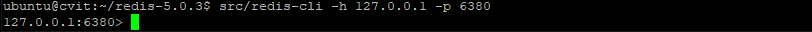
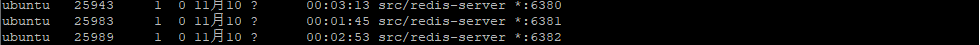
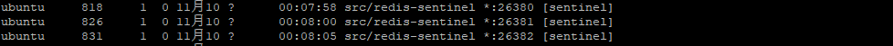

走完该走的路，才能走想走的路
缓存神器——Redis初探
Redis在企业开发中通常充当高速缓存的作用，用于保护接口或者数据库。在高并发的场景、分布式场景下也可以充当分布式锁，避免多个JVM进程在同一时间对同一资源进行修改，从而非线程安全的问题。
以下是在Ubuntu 18.0.1作为Redis服务器，利用远程连接的方式操作Redis，IDE为IDEA
Redis安装与部署
1、安装
首先来说说Redis的安装吧，Redis作为最火热的缓存中间件，在很多的系统上面都有广泛的应用，兼容性是非常好的。一般的企业都会使用Linux来作为服务器的系统，一来是因为Linux是开源的，可以自己去修改系统的，其次就是相比Windows，它具有更少的附加服务。值得一提的是，大多数都会选择Centos作为服务器的系统，但是由于我在做项目的时候甲方使用的Ubuntu，所以这篇文章是按照Ubuntu来写的。
安装Redis也是非常简单的，特别是在Ubuntu上面安装，在Ubuntu上面有两种安装方式，一种是使用apt-get来安装；一种是使用源码安装。下面介绍的是使用源码编译的方式来安装。
//安装编译工具，Redis是基于C语言环境下的。CetenOS是自带C语言环境的，但是Ubuntu是不带，所以需要安装
sudo apt-get install build-essential
// 下载Redis
wget http://download.redis.io/releases/redis-4.0.14.tar.gz
// 解压Redis
tar -xvzf redis-4.0.14.tar.gz
//进入Redis目录进行编译安装
cd redis-4.0.14
make等待编译完成，Redis的安装就已经完成了。
2、部署
此时Redis已经安装完成，我们可以开始启动了。但是，Redis是默认不允许后台运行，而且不允许远程连接的，所以需要先修改配置文件。
修改配置文件，开启后台运行
# By default Redis does not run as a daemon. Use 'yes' if you need it.
# Note that Redis will write a pid file in /var/run/redis.pid when daemonized.
daemonize yes
# 默认值是no，将daemonize的值改为yes，表示允许后台运行修改配置文件，开启远程连接
# ~~~ WARNING ~~~ If the computer running Redis is directly exposed to the
# internet, binding to all the interfaces is dangerous and will expose the
# instance to everybody on the internet. So by default we uncomment the
# following bind directive, that will force Redis to listen only into
# the IPv4 loopback interface address (this means Redis will be able to
# accept connections only from clients running into the same computer it
# is running).
#
# IF YOU ARE SURE YOU WANT YOUR INSTANCE TO LISTEN TO ALL THE INTERFACES
# JUST COMMENT THE FOLLOWING LINE.
# ~~~~~~~~~~~~~~~~~~~~~~~~~~~~~~~~~~~~~~~~~~~~~~~~~~~~~~~~~~~~~~~~~~~~~~~~
# bind 127.0.0.1
# 将上一行代码注释掉，上一行代码的意思就是只允许本地连接，注释掉就所有的IP地址都会被侦测，也可以设置指定的IP地址。此时Redis的准备工作就已经全部完成了，剩下来就是启动Redis服务：
//进入Redis的目录，启动Redis服务
src/redis-server redis.conf
//表示按照redis.conf的配置来启动Redis服务
//通过以下命令查看Redis是否真正启动
ps -ef|grep redis|grep -v grep出现下图即表示Redis的服务启动成功，这里我修改了6379默认端口为6380，是因为6379被其他的服务占用了端口，所以我进行了修改
或者使用安装的Redis客户端进入Redis服务验证Redis服务是否启动：
//进入Redis的目录，执行下列代码，进入客户端
src/redis-cli -h 127.0.0.1 -p 6380进入下面的界面就表示进入了Redis的服务器，可以执行一些常用的Redis服务了。

此时服务器端的配置就基本完成了。剩下来的就是我们该如何使用Spring Boot来对其进行操作。
Redis的单机模式
Redis的单机模式指的是只有一个服务端的Redis，Redis支持多种的拓扑结构，来实现服务的熔断机制。以保证在任何时刻，缓存机制不失效。首先介绍一下Redis的单机模式。单机模式只需要向上面一样开启远程连接即可。
1、引入依赖
首先Spring Boot对Redis也有很好的支持，首先引入：
<dependency>
<groupId>org.springframework.boot</groupId>
<artifactId>spring-boot-starter-redis</artifactId>
<exclusions>
<!--不依赖Redis的异步客户端lettuce-->
<exclusion>
<groupId>io.lettuce</groupId>
<artifactId>lettuce-core</artifactId>
</exclusion>
</exclusions>
<version>1.4.6.RELEASE</version>
</dependency>
<dependency>
<groupId>redis.clients</groupId>
<artifactId>jedis</artifactId>
</dependency>2、Redis的连接
Redis有很多的实现方式，其中常用的有Jedis和RedisTemplate，lettuce，在此就介绍前面两种。
Jedis方式
Jedis方式的关键就是JedisPool，需要创建一个线程池来做Redis的相关操作。首先在application.properties中配置Redis相关连接参数：#redis配置开始 # Redis数据库索引（默认为0） spring.redis.database=0 # Redis服务器地址 spring.redis.host=你服务器的IP地址即可 # Redis服务器连接端口 spring.redis.port=你设置的端口即可，默认端口为6379 # Redis服务器连接密码（默认为空） # spring.redis.password="" # 连接池最大连接数（使用负值表示没有限制） spring.redis.jedis.pool.max-active=1024 # 连接池最大阻塞等待时间（使用负值表示没有限制） spring.redis.jedis.pool.max-wait=10000 # 连接池中的最大空闲连接 spring.redis.jedis.pool.max-idle=2000 # 连接池中的最小空闲连接 spring.redis.jedis.pool.min-idle=0 # 连接超时时间（毫秒） spring.redis.timeout=10000 #redis配置结束然后创建一个Redis的配置文件，创建一个Redis线程池：
@Configuration @PropertySource("classpath:redis.properties") public class RedisConfig { @Value("${spring.redis.host}") private String host; @Value("${spring.redis.port}") private int port; @Value("${spring.redis.timeout}") private int timeout; @Value("${spring.redis.jedis.pool.max-idle}") private int maxIdle; @Value("${spring.redis.jedis.pool.max-wait}") private long maxWaitMillis; @Value("${spring.redis.block-when-exhausted}") private boolean blockWhenExhausted; @Bean public JedisPool redisPoolFactory() throws Exception{ JedisPoolConfig jedisPoolConfig = new JedisPoolConfig(); jedisPoolConfig.setMaxIdle(maxIdle); jedisPoolConfig.setMaxWaitMillis(maxWaitMillis); JedisPool pool = new JedisPool(jedisPoolConfig,host,port,timeout); return pool; } }然后创建有一个Redis的工具类：
package org.panhao.mqtt.util; import lombok.extern.slf4j.Slf4j; import org.springframework.beans.factory.annotation.Autowired; import org.springframework.stereotype.Component; import redis.clients.jedis.Jedis; import redis.clients.jedis.JedisPool; import redis.clients.jedis.JedisSentinelPool; /** * @program:MQTTStudy * @description:创建Redis工具类 * @author:Mr.Pan * @create:2020-11-10 10:10:35 */ @Component @Slf4j public class RedisUtil { @Autowired private JedisSentinelPool jedisPool; /** * @Author: PanHao * @Description: 向Redis中存值，永久有效 * @Date: 2020/11/10 11:09 * @Param: [key, value] * @Return: java.lang.String **/ public String set(String key, String value) { Jedis jedis = null; try { jedis = jedisPool.getResource(); return jedis.set(key, value); } catch (Exception e) { e.printStackTrace(); return "error"; } finally { jedis.close(); } } /** * @Author: PanHao * @Description: 向redis中存储键值对，并设置生命时间 * @Date: 2020/11/10 14:41 * @Param: [key, value, second] * @Return: java.lang.String **/ public String setTimeOut(String key, String value, int second) { Jedis jedis = null; try { jedis = jedisPool.getResource(); jedis.set(key, value); jedis.expire(key, second); return "success"; } catch (Exception e) { e.printStackTrace(); return "error"; } finally { jedis.close(); } } /** * @Author: PanHao * @Description: 通过key向redis中读取value * @Date: 2020/11/10 14:50 * @Param: [key] * @Return: java.lang.String **/ public String get(String key) { Jedis jedis = null; String value = null; try { jedis = jedisPool.getResource(); value = jedis.get(key); return value; } catch (Exception e) { e.printStackTrace(); return "error"; } finally { jedis.close(); } } /** * @Author: PanHao * @Description: 通过key，判断redis中是否存在这个键值对 * @Date: 2020/11/10 14:53 * @Param: [key] * @Return: boolean **/ public boolean exists(String key) { Jedis jedis = null; try { jedis = jedisPool.getResource(); return jedis.exists(key); } catch (Exception e) { return false; } finally { jedis.close(); } } /** * @Author: PanHao * @Description: 通过key来删除redis里面的键值对 * @Date: 2020/11/10 15:00 * @Param: [key] * @Return: java.lang.Long **/ public Long del(String key) { Jedis jedis = null; try { jedis = jedisPool.getResource(); return jedis.del(key); } catch (Exception e) { return 0L; } finally { jedis.close(); } } /** * @Author: PanHao * @Description: 清空当前数据库中所有key * @Date: 2020/11/10 15:03 * @Param: [] * @Return: java.lang.String **/ public String flushDB() { Jedis jedis = null; try { jedis = jedisPool.getResource(); return jedis.flushDB(); } catch (Exception e) { log.info(e.getCause().toString()); } finally { jedis.close(); } return null; } }此时创建测试文件，现在Redis里面存储一个
book 亚里士多德的键值对，然后再对其进行取值：@RunWith(SpringRunner.class) @SpringBootTest public class TestRedis { @Autowired private RedisUtil redisUtil; @Test public void test(){ redisUtil.set("book","亚里士多德"); System.out.println(redisUtil.get("book")); } }此时控制台的输出为：
亚里士多德此时与Redis的交互就已经完成了。接下来展示使用
RedisTemplate的方式进行Redis的一些操作。RedisTemplate的方式
RedisTemplate的方式与Jedis的方式其实差距不大，首先都是需要创建一个与客户端的连接池。在RedisConfig类中加入以下：@Bean public RedisTemplate<String, Object> redisTemplate(RedisConnectionFactory redisConnectionFactory) { StringRedisSerializer serializer = new StringRedisSerializer(); RedisTemplate<String, Object> template = new RedisTemplate<>(); template.setConnectionFactory(redisConnectionFactory); template.setKeySerializer(serializer); template.setValueSerializer(serializer); return template; }然后创建一个新的Redis工具类，使用RedisTemplate来操作Redis里面的键值对：
/** * @program:MQTTStudy * @description:利用RedisTemplate来编写操作类 * @author:Mr.Pan * @create:2020-11-11 08:8:47 */ @Component public class RedisUtil2 { @Autowired private RedisTemplate<String,Object> redisTemplate; /** * @Author: PanHao * @Description: 判断Redis数据库是否存有key的键值对 * @Date: 2020/11/11 9:26 * @Param: [key] * @Return: boolean **/ public boolean hasKey(String key){ try { return redisTemplate.hasKey(key); } catch (Exception e) { e.printStackTrace(); return false; } } /** * @Author: PanHao * @Description: 向Redis中存入(key,value)的键值对,永久有效 * @Date: 2020/11/11 9:29 * @Param: [key, value, time] * @Return: boolean **/ public boolean set(String key,String value){ try { redisTemplate.opsForValue().set(key,value); return true; } catch (Exception e) { e.printStackTrace(); return false; } } /** * @Author: PanHao * @Description: 向Redis中存入（key，value）键值对，并设置缓存失效时间为time * @Date: 2020/11/11 9:36 * @Param: [key, value, time] * @Return: boolean **/ public boolean setKeyTimeOut(String key,String value,long time){ try { redisTemplate.opsForValue().set(key,value,time,TimeUnit.SECONDS); return true; } catch (Exception e) { e.printStackTrace(); return false; } } /** * @Author: PanHao * @Description: 将Redis中的键设置缓存失效时间，也可以达到删除键的效果 * @Date: 2020/11/11 9:32 * @Param: [key, time] * @Return: boolean **/ public boolean expire(String key,long time){ try { redisTemplate.expire(key,time,TimeUnit.SECONDS); return true; } catch (Exception e) { e.printStackTrace(); return false; } } /** * @Author: PanHao * @Description: 获取Redis中对应的key所在键值对的value值 * @Date: 2020/11/11 9:57 * @Param: [key] * @Return: java.lang.Object **/ public Object get(String key){ if(hasKey(key)){ return redisTemplate.opsForValue().get(key); }else { return "请输入正确的Key"; } } }可以在测试类中测试其中的方法。我在这里就不赘述了，测试的方式也是很简单的，方法也比较容易看懂。
Redis的哨兵模式
在单机模式中，假如因为特殊原因导致缓存服务器的宕机，就会导致系统之间出现故障。这意味着Redis的服务是不可以失效的。而且当大量的数据进行读写的时候，一个Redis服务的性能是完全不够的。这时候就需要使用其他的工作方式。例如主从模式，主从模式是利用主机进行写入操作，利用从机做读取操作。主机与从机之间在一定的时间段内进行同步操作。主从模式虽然可以大大的缓解读写的压力，但是一旦主机宕机了，服务依旧会停止，这样系统的缓存机制依旧会失效，这样就会增加数据库的读写压力。
哨兵模式的出现会大大的增加主从模式的容错率，所谓哨兵模式是指在主从模式，增加哨兵，对主从模式进行侦测，一旦主机宕机，通过哨兵的选举机制可以产生新的主机，这样即使主机宕机，也会有另一个主机出来继续工作。
哨兵模式和单机模式只是运作的方式不同，我们使用Java代码进行操作的时候，无非就是配置不同，但是对于读取，会自动的识别主机的位置，不需要我们指定主机的位置。
1、部署哨兵模式
部署哨兵模式也是非常简单的。首先来看单机Redis中，我们是通过配置文件来启动的Redis服务。在这里我们需要启动三个Redis服务，其中两个为从机，一个为主机。
创建Redis主从节点配置文件
//创建Redis 127.0.0.1:6380 配置文件 cp redis.conf redis6380.conf //创建Redis 127.0.0.1:6381 配置文件 cp redis.conf redis6381.conf //创建Redis 127.0.0.1:6382 配置文件 cp redis.conf redis6382.conf修改各个Redis配置文件
修改
redis6380.conf配置文件，配置启动端口为6380port 6380修改
redis6381.conf配置文件，配置端口为6381，并配置此节点为127.0.0.1 6380的从节点port 6381 slaveof 127.0.0.1 6380修改
redis6382.conf配置文件，配置端口为6382，并设置此节点为127.0.0.1 6380的从节点port 6382 slave 127.0.0.1 6380分别启动Redis主从节点
src/redis-server redis6380.conf src/redis-server redis6381.conf src/redis-server redis6382.conf验证Redis Master节点和Slave节点启动状况：
ps -ef|grep redis|grep -v grep出现下图，即可表示三个服务都启动了，对应端口为6380、6381、6382。

以上的操作就是主从模式，其实哨兵模式就是主从模式的一个升级，核心就是主从模式，最大的区别就是：哨兵模式中，在每一个主机和从机节点旁边都会有一个哨兵对其进行检测，一旦发现主机节点宕机，哨兵就通过选举机制，选出新的主机节点。在失效的节点被人为修复之后，再次加进来就会变成从机节点。
创建哨兵配置文件
进入Redis目录，将
sentinel.conf配置文件复制3份，分别命名为sentinel26380.conf、sentinel26381.conf、sentinel26382.conf：//创建Redis 127.0.0.1 6380配置文件 cp sentinel.conf sentinel26380.conf //创建Redis 127.0.0.1 6381配置文件 cp sentinel.conf sentinel26381.conf //创建Redis 127.0.0.1 6382配置文件 cp sentinel.conf sentinel26382.conf修改Redis哨兵配置文件
修改
sentinel26380.conf配置文件，配置启动端口为26380，并监听127.0.0.1 6379主节点# 配置哨兵端口号为26379 port 26380 # 配置监听master节点 127.0.0.1 6380 # 最后一个参数2表示当集群中有两个Redis哨兵认为master下线，才能真正认为该master已经不可用 sentinel monitor mymaster 127.0.0.1 6380 2修改
sentinel26381.conf配置文件，配置启动端口为26381，并监听127.0.0.1 6380主节点# 配置哨兵端口号为26381 port 26381 # 配置监听master节点 127.0.0.1 6380 # 最后一个参数2表示当集群中有两个Redis哨兵认为master下线，才能真正认为该master已经不可用 sentinel monitor mymaster 127.0.0.1 6380 2修改
sentinel26382.conf配置文件，配置启动端口为26381，并监听127.0.0.1 6380主节点# 配置哨兵端口号为26382 port 26382 # 配置监听master节点 127.0.0.1 6380 # 最后一个参数2表示当集群中有两个Redis哨兵认为master下线，才能真正认为该master已经不可用 sentinel monitor mymaster 127.0.0.1 6380 2
假如你是在本地做测试就无所谓，但是如果你是在服务器上面做测试，而且服务器端口有保护的，上面的
127.0.0.1应该换成你服务器的IP地址。而且sentinel.conf中也是需要打开后台运行的，一样是在daemonize yes处修改。
分别启动Redis哨兵
src/redis-sentinel sentinel26380.conf src/redis-sentinel sentinel26381.conf src/redis-sentinel sentinel26382.conf验证Redis哨兵启动：
ps -ef|grep redis|grep -v grep出现如图所示即表示哨兵模式已经启动了：

2、连接实现Redis哨兵模式
利用SpringBoot连接Redis哨兵模式的时候，其实和单机没什么不一样，唯一的区别就是在配置方式上面。
在
application.properties文件中加入哨兵机制的配置spring.redis.sentinel.master=mymaster spring.redis.sentinel.nodes=你的IP地址:26380,你的IP地址:22在
RedisConfig.java中修改Jedis的客户端将
JedisPool修改为JedisSentinelPool，并在配置文件中加入如下代码：@Value("${spring.redis.sentinel.master}") private String sentinelName; @Value("${spring.redis.sentinel.nodes}") private String[] sentinels; @Bean public JedisSentinelPool redisPoolFactory() throws Exception{ JedisPoolConfig jedisPoolConfig = new JedisPoolConfig(); jedisPoolConfig.setMaxIdle(maxIdle); jedisPoolConfig.setMaxWaitMillis(maxWaitMillis); Set<String> sentinelSets = new HashSet<String>(Arrays.asList(sentinels)); JedisSentinelPool pool = new JedisSentinelPool(sentinelName,sentinelSets,jedisPoolConfig); return pool; }再将
RedisUtil.java中的JedisPool修改为JedisSentinelPool即可：package org.panhao.mqtt.util; import lombok.extern.slf4j.Slf4j; import org.springframework.beans.factory.annotation.Autowired; import org.springframework.stereotype.Component; import redis.clients.jedis.Jedis; import redis.clients.jedis.JedisSentinelPool; /** * @program:MQTTStudy * @description:创建Redis工具类 * @author:Mr.Pan * @create:2020-11-10 10:10:35 */ @Component @Slf4j public class RedisUtil { @Autowired private JedisSentinelPool jedisPool; ... }测试和单机模式的测试是完全一样的，此时的读写操作对于开发人员来说和单机模式没有什么不一样的。
转载请注明来源，欢迎对文章中的引用来源进行考证，欢迎指出任何有错误或不够清晰的表达。可以在下面评论区评论，也可以邮件至 1920734752@qq.com